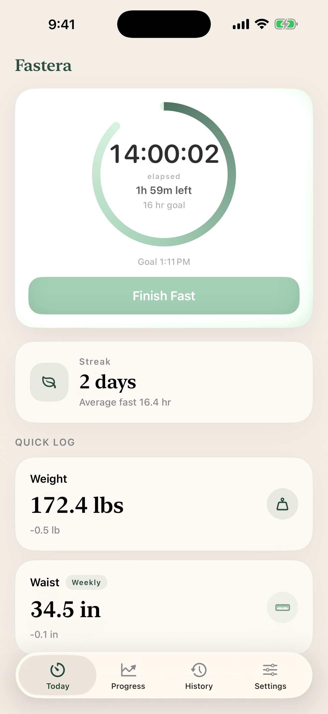
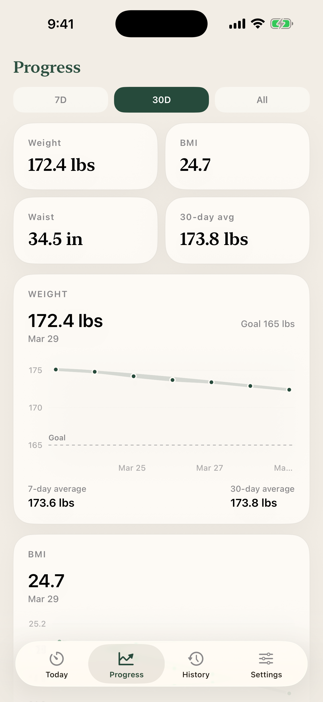
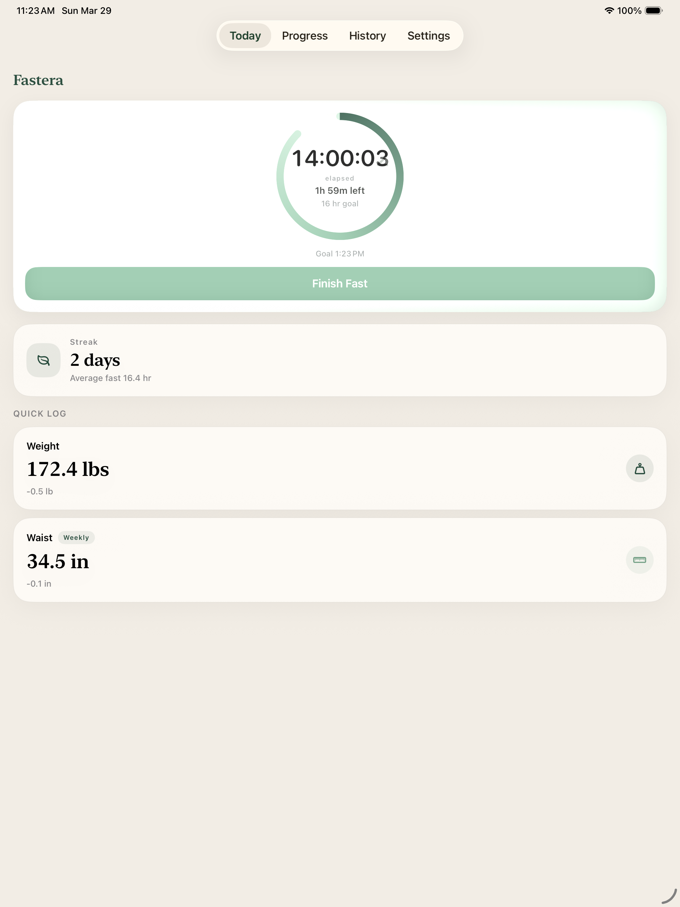
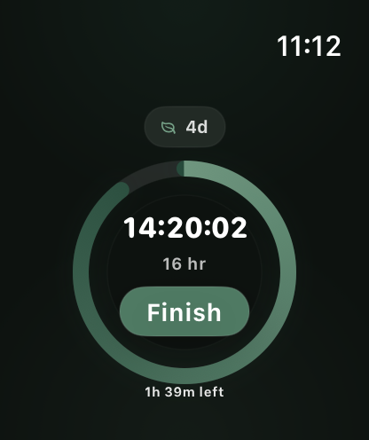

Private by default
Your fasting data stays local-first. No ads. No account. No tracking layer added on top.
Free. Private. No ads.
Intermittent fasting for iPhone and Apple Watch, built to stay simple.

Your fasting data stays local-first. No ads. No account. No tracking layer added on top.
Start or finish a fast in one tap, log weight quickly, and check progress without a crowded dashboard.
Purpose-built for iPhone, Apple Watch, widgets, and Live Activities with a calm, native design.
Screens



What Fastera is